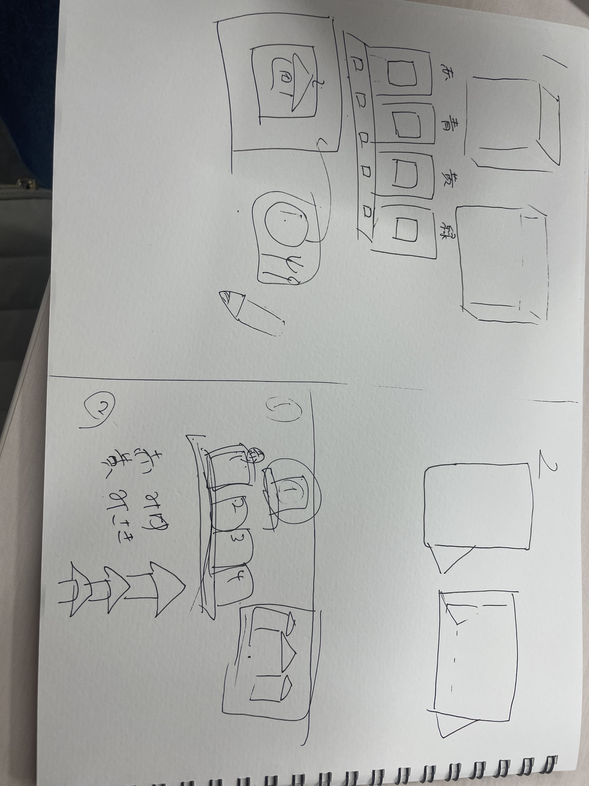
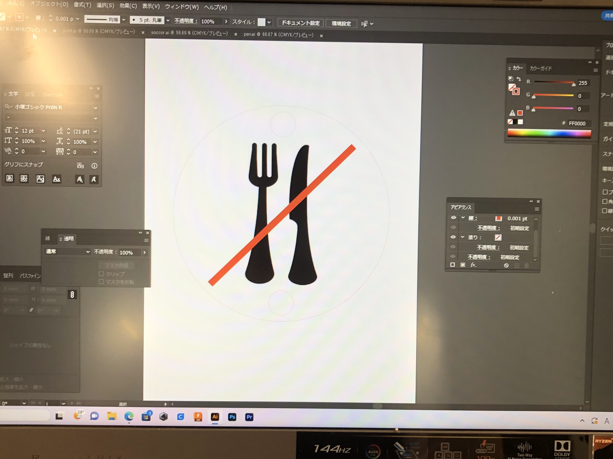
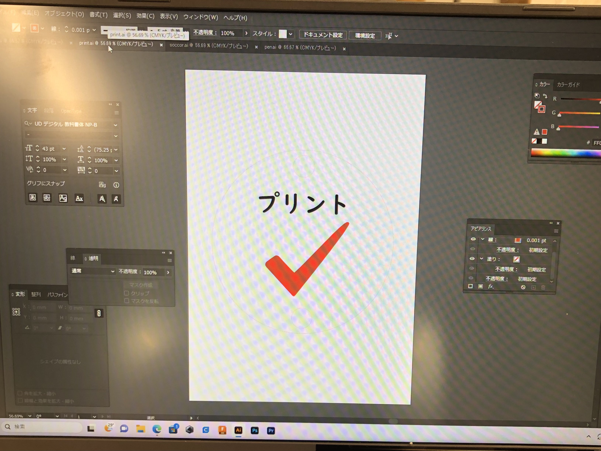
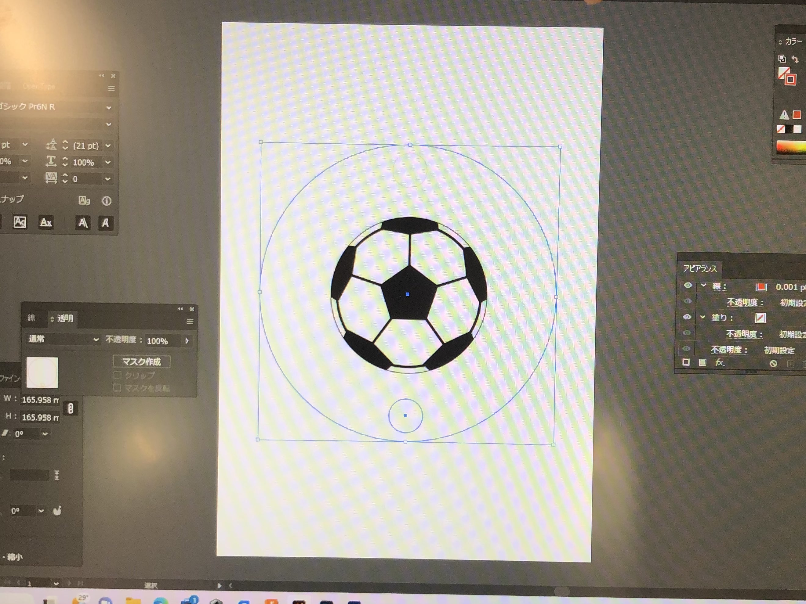
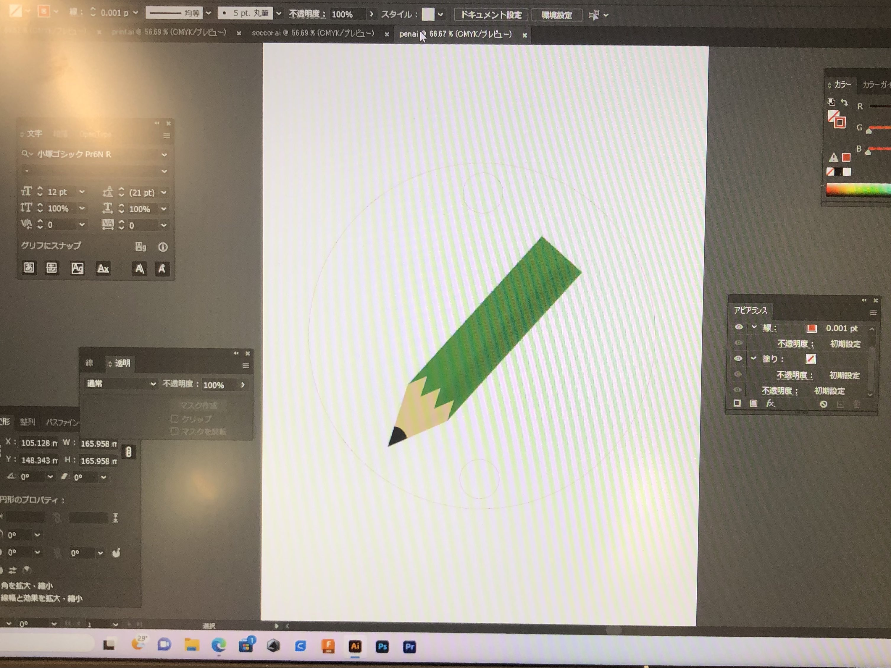
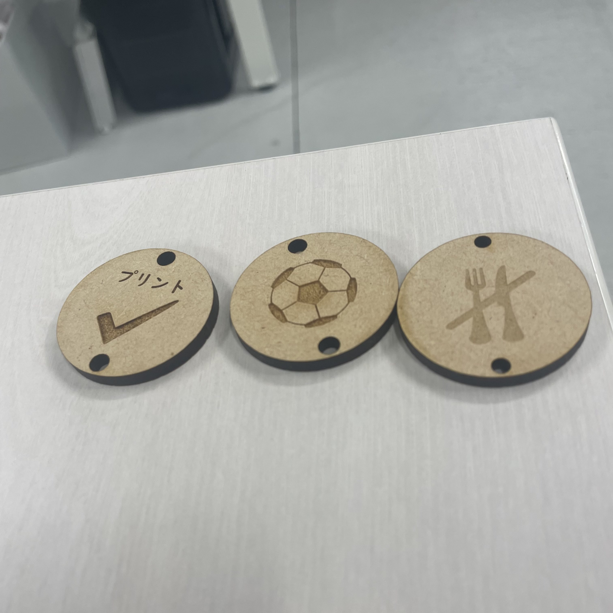
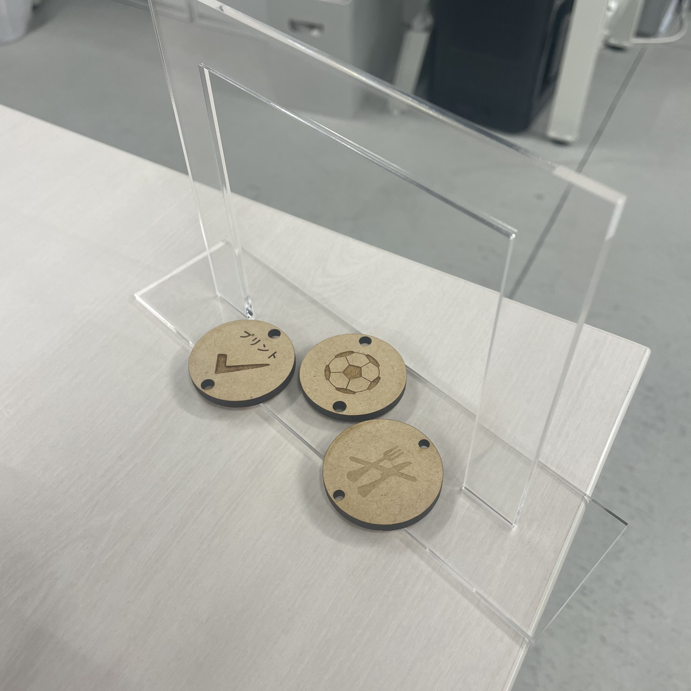

メンバー：みさき,kosugi12,さとうみゆ,サカモト
プロジェクトノート
概要
悩み
- 予定のぬけがあることがある
- 予定を直前で言われることがある
解決
家族全員で共有できるカレンダー的なもの、更に楽しめることにフォーカスしたものを作る！
班での話し合い
3Dプリンターやレーザー勝ったをつかったアナログ的な製品地、IoTを使ったデジタルを重視した製品のふたつの案ですすめる
重視したいこと
簡単な予定にフォーカスして小学生でも予定を示せるパズルのようなもの
４人家族を想定して重視される簡単な予定とは何かの話し合い
プロセスメモ
■内容
- ■4人家族に必要な予定とは
⇒学校のプリント提出、部活の予定、友達と遊ぶ予定など？
- ●該当する家族構成の人にインタビューしてみる
■デザイン
- ■小学生が楽しいと視覚的に思ってもらえるデザインとは？
↓

- ●予定を表すようなピクトグラム的なアイコンを作る
↓



■素材
■インテリアにも使えるようなおしゃれなデザイン
⇒土台をアクリル、アイコンをMDFにUVプリンターで印刷する